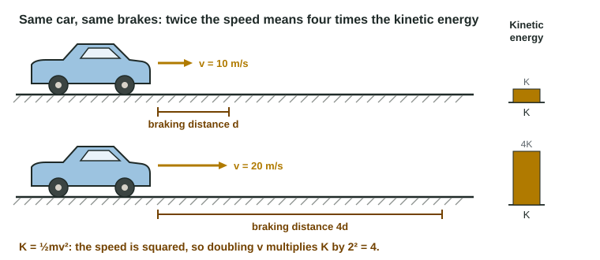

Translational Kinetic Energy
Kinetic energy is K = ½mv², in joules.
Part 1 · Hook
Why this matters
Part 2 · Before you start
What this builds on
Part 3 · Prerequisite check
Quick check before you start
1. Which of these is a scalar?
- Speed
- Velocity
- Displacement
- Acceleration
Show the answer
Speed has a size but no direction; the other three are vectors.
- Correct: Speed:
- Velocity:
- Displacement:
- Acceleration:
2. A cart moves west at 3.0 m/s, with east positive. What is its speed?
- 3.0 m/s
- −3.0 m/s
- 0 m/s
- 9.0 m/s
Show the answer
Speed is the size of the velocity, so it is positive: 3.0 m/s.
- Correct: 3.0 m/s:
- −3.0 m/s:
- 0 m/s:
- 9.0 m/s:
3. From v² = v₀² + 2aΔx, a car that stops (v = 0) with a constant deceleration of size a travels
- v₀²/(2a)
- v₀/(2a)
- 2av₀
- v₀²/a
Show the answer
0 = v₀² − 2aΔx, so Δx = v₀²/(2a).
- Correct: v₀²/(2a):
- v₀/(2a):
- 2av₀:
- v₀²/a:
Part 4 · See it
See it first

Part 5 · Step by step
How it works, step by step
- An object of mass m moves at speed vit has kinetic energy K = ½mv², measured in joules (kg·m²/s²)
- The speed enters squareddoubling the speed makes K four times as large, while doubling the mass only doubles it
- Squaring removes the sign of the velocityK is a scalar that is never negative and does not depend on direction
- Speed depends on the reference framethe same object has different kinetic energies in different frames
- A system has several moving partsits kinetic energy is the sum of the parts' kinetic energies, which never cancel
Part 6 · Key ideas
Key ideas
- Energy is a scalar quantity a system has; it can change form and move between objects. Its SI unit is the joule: 1 J = 1 kg·m²/s².
- Kinetic energy, K = ½mv², is the energy of motion. It depends on mass and on the speed squared.
- K is never negative and has no direction. A cart moving left at 3 m/s has the same K as one moving right at 3 m/s.
- ΔK = ½mv_f² − ½mv_i², which is not ½m(Δv)². Square each speed first, then subtract.
- Kinetic energy depends on the reference frame, because speed does.
Part 7 · Misconception
A common mistake
The wrong idea: A cart that speeds up from 2.0 m/s to 3.0 m/s gains ½m(1.0 m/s)² of kinetic energy.
What actually happens: The change is ½m(3.0 m/s)² − ½m(2.0 m/s)² = ½m(5.0 m²/s²), five times ½m(Δv)² = ½m(1.0 m²/s²). Square each speed before you subtract.
Part 8 · Check yourself
Check yourself
Exam-style questions. Anything you miss goes into your review queue.
Diagram
One car at two speeds
The car has a mass of 1200 kg. In both rows the driver brakes with the same braking force.
1. What is the car's kinetic energy at 10 m/s? Give the value and its unit.
Type a number and its unit.
Show the answer
K = ½mv² = ½(1200 kg)(10 m/s)² = 60,000 J = 6.0 × 10⁴ J. A joule is a kg·m²/s².
- Answer: 6.0 × 104 J
2. How does the car's kinetic energy at 20 m/s compare with its kinetic energy at 10 m/s?
- 4 times as large
- 2 times as large
- 8 times as large
- The same, since the mass is the same
Show the answer
K = ½mv². The mass is fixed, so K ∝ v². Doubling v multiplies K by 2² = 4.
- Correct: 4 times as large: Right: K depends on v², and (20/10)² = 4.
- 2 times as large: This treats K as proportional to v. The speed is squared, so doubling it multiplies K by 4.
- 8 times as large: This cubes the speed ratio. K = ½mv² has v squared, not cubed.
- The same, since the mass is the same: The mass is the same, but K also depends on the speed, and the speed doubled.
3. By how much does the car's kinetic energy increase when it speeds up from 10 m/s to 20 m/s? Give the value and its unit.
Type a number and its unit.
Show the answer
ΔK = ½mv_f² − ½mv_i² = ½(1200 kg)[(20 m/s)² − (10 m/s)²] = ½(1200)(300) J = 1.8 × 10⁵ J. Note this is three times ½m(Δv)².
- Answer: 1.8 × 105 J
4. With the same braking force, the car at 10 m/s stops in a distance d. In what distance does it stop from 20 m/s?
- 2d
- 4d
- d
- √2 d
Show the answer
The same braking force gives the same deceleration a (Newton's second law). From v² = v₀² + 2aΔx with v = 0, Δx = v₀²/(2a), so doubling v₀ makes the distance 4 times as long, matching the four times larger kinetic energy.
- 2d: This assumes the stopping distance grows in step with the speed. With constant deceleration it grows with v².
- Correct: 4d: Right: the same force gives the same deceleration, and v² = 2aΔx makes the distance grow as v².
- d: The deceleration is the same, but a faster car needs more distance to lose its speed.
- √2 d: This takes a square root of the speed ratio. The distance depends on v², so the factor is 2² = 4.
5. A student finds that a 2.0 kg cart moving left at 3.0 m/s has a kinetic energy of −9.0 J. What went wrong?
- Nothing: leftward motion has negative kinetic energy
- The ½ was left out; it should be −4.5 J
- K cannot be negative; it is +9.0 J
- The speed should not be squared; it is −3.0 J
Show the answer
K = ½mv² = ½(2.0 kg)(−3.0 m/s)² = +9.0 J. Kinetic energy is a scalar and is never negative.
- Nothing: leftward motion has negative kinetic energy: Kinetic energy has no direction. Squaring the velocity removes its sign.
- The ½ was left out; it should be −4.5 J: The ½ was used: ½(2.0)(9.0) = 9.0. The real slip is the sign.
- Correct: K cannot be negative; it is +9.0 J: Right: (−3.0 m/s)² is positive, so K = +9.0 J.
- The speed should not be squared; it is −3.0 J: K = ½mv² does square the speed. The answer is positive.
6. A crate moving at 3.0 m/s has 54 J of kinetic energy. What is its mass, in kg?
Type a number in kg.
Show the answer
m = 2K/v² = 2(54 J)/(3.0 m/s)² = 108/9.0 kg = 12 kg.
- Answer: 12 kg
Part 9 · Summary
Summary
Part 10 · Up next
What comes next
Part 11 · Connections